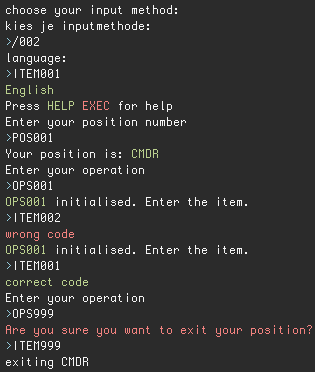
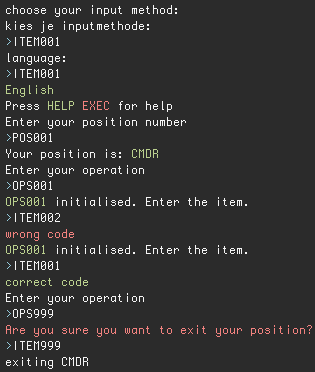
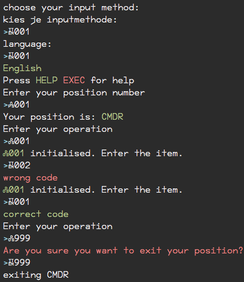

shuttle-command
Use a modified numpad to emulate the input of commands in a space shuttle.
Set-up
You need an (external) numpad and modify it to look like this image:

The keypad is modified to show:
| original | replaced |
|---|---|
| + | HELP |
| - | POS |
| / | ITEM |
| * | OPS |
You'll also need a bash shell (included in most Linux distributions and in Mac OS X, emulators can be found for Windows)
Downloading the script
Download the shuttle.sh script using your preferred method. For example through git:
git clone https://github.com/haroenv/shuttle-command.git
cd shuttle-command
lsThe advantage of using git instead of just downloading the files using curl, or the github zip download feature is that you can update the script when necessary using git pull
or if you don't have git, a simple curl should also work:
curl https://github.com/Haroenv/shuttle-command/archive/master.zip
unzip master.zip
cd shuttle-command
lsThis should be done again regularly, to ensure you have the version with the least errors as possible.
Changing the keymap
To use this method, you'll have to find out to what keys your numpad are mapped. When you find out what keycodes the keys to replaced are mapped, you can change your keymap to.
| original | replaced |
|---|---|
| + | HELP |
| - | POS |
| / | ITEM |
| * | OPS |
- [ ] to do: how to change keymap
When using the script, your "input method" will be "ITEM001"
Using the delayed input
Using this method, you don't have to change anything to your terminal or install to your machine. The drawback is that you can't see your input until pressing EXEC(⏎/ENTER). This is because it has to be processed before being able to show what the several keys mean.
When using the script, your "input method" will be "ITEM002"
Using the modified font (not recommended)
Download the font and install it (usually: sudo cp -r ./font.otf /usr/share/fonts/truetype/) or installing it using the default graphical method.
To make things easy, the first method is also included in a script called moveFont.sh, which can ask for your admin password.
and make sure it is used in your terminal (right-click > preferences > font > For Personal Gain (regular)).
This font is modified to show:
| original | replaced |
|---|---|
| + | HELP |
| - | POS |
| / | ITEM |
| * | OPS |
Now you can enter as expected on the numpad, but a drawback is that it's harder to read due to its lower size, and it changes settings for the whole terminal
When using the script, your "input method" will be "ITEM001"
Usage
Open your terminal, cd into the correct directory.
It could be possible that the script doesn't have the correct permissions. You can check this by doing ls -l shuttle.sh in the correct directory. The output should look like this: -rwxr-xr-x 1 user staff 6.7K Mar 18 12:06 shuttle.sh*, important is that you at least see the first x, if you don't you can change the permissions using chmod 755 shuttle.sh.
Running
open the script in terminal using ./shuttle.sh, enter the language, the correct position and then the correct operation.
Then you can enter the item-code, which will display whether it was correct or not.
To exit from a position, enter operation 999.
Operating
- [ ] to do: remake the scripts to make use of
shuttle.sh - [ ] to do: make
shuttle.shin such a way that it matches the script
The times at which certain codes have to be entered are written in the space shuttle script. These scripts are so far only in Dutch. They can be found at Haroenv/jwr-shuttle/scripts
Demo
Delayed input
This is the method requiring the least set-up. The script waits for a carriage return (ENTER), then it replaces / to ITEM etc., after which it will be showed on that line.

Changed keymap
This is also the preferred method for a full keyboard without alterations. By changing your keymap, the keys on the keypad will be converted to the corresponding codes when correctly set up.

Modified font
This method is optimised for input by numpad, but not great when you want to still do other things in the same window. It also requires a rather large font size to be legible.

Development status
For now, not all codes from jwr-shuttle/scripts have been implemented. You should be able to help by reading it and adding the codes to the appropriate moment.
Also notably WXT still needs a lot of additions to the interactive part.
License

shuttle-command is licensed under a Creative Commons Attribution-ShareAlike 4.0 International License. No warranty whatsoever.
Made for JWR v.z.w by Haroen Viaene
Font is based on "For Personal Gain - NonProfit" (CC 0)